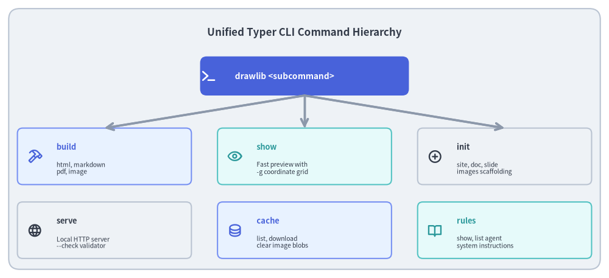
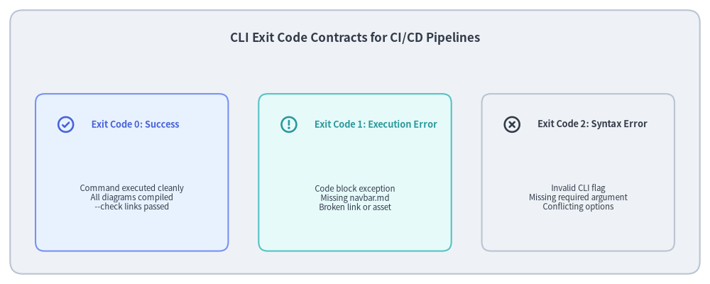

Unified CLI Architecture (drawlib._cli)
A command-line interface serves as the primary bridge between developers, automated CI/CD runners, AI coding agents, and the underlying drawing and compilation engines. If a CLI lacks structured error reporting, predictable exit codes, or intuitive argument discovery, automation becomes fragile and difficult to maintain.
Drawlib's CLI (_cli/) is built on Typer + Rich, providing a unified, type-safe command hierarchy with explicit exit code contracts and interactive visual diagnostics.

Source Code
from drawlib.canvas import save, setup
from drawlib.icons import phosphor
from drawlib.lines import line
from drawlib.shapes import rectangle
from drawlib.styles import Styles
from drawlib.text import text
setup(width=140, height=64)
rectangle((70, 32), width=136, height=60, style=Styles.Neutral.patch(shape_r=2.5))
text(
(70, 56.5),
"Unified Typer CLI Command Hierarchy",
style=Styles.DarkBold.patch(text_size=12.2),
)
# Root Command at Top
rectangle((70, 46.5), width=48, height=9, style=Styles.PrimaryFlat.patch(shape_r=1.5))
phosphor.terminal((48, 46.5), width=3.8, style=Styles.WhiteBold)
text((54, 46.5), "drawlib <subcommand>", style=Styles.WhiteBold.patch(halign="left", text_size=9.8))
# 6 Subcommands in Grid
commands = [
(24, 28, "build", "html, markdown\npdf, image", phosphor.hammer, Styles.PrimaryNeutral, Styles.PrimaryBold),
(70, 28, "show", "Fast preview with\n-g coordinate grid", phosphor.eye, Styles.SecondaryNeutral, Styles.SecondaryBold),
(116, 28, "init", "site, doc, slide\nimages scaffolding", phosphor.plus_circle, Styles.Neutral, Styles.DarkBold),
(24, 11, "serve", "Local HTTP server\n--check validator", phosphor.globe, Styles.Neutral, Styles.DarkBold),
(70, 11, "cache", "list, download\nclear image blobs", phosphor.database, Styles.PrimaryNeutral, Styles.PrimaryBold),
(116, 11, "rules", "show, list agent\nsystem instructions", phosphor.book_open, Styles.SecondaryNeutral, Styles.SecondaryBold),
]
for x, y, cmd, desc, icon_func, card_style, icon_style in commands:
rectangle((x, y), width=40, height=13, style=card_style.patch(shape_r=1.2))
icon_func((x - 16, y), width=3.4, style=icon_style)
text((x - 11, y + 2.2), cmd, style=icon_style.patch(halign="left", text_size=9.2))
text((x - 11, y - 2.8), desc, style=Styles.Dark.patch(halign="left", text_size=7.5))
line((70, 42), (x, 34.5), arrow_head="->", style=Styles.MutedBold)
save()
1. Concept: Type-Safe Command Dispatching
Instead of manual argparse dispatching with loose strings, Drawlib utilizes Typer, harnessing Python type hints for CLI arguments:
- Parameters annotated with
Pathautomatically resolve relative paths and verify filesystem existence. - Flag options annotated with
boolgenerate synchronized positive and negative flags (e.g.--cache / --no-cache,--check / --no-check). - Dynamic Shell Autocompletion: Shell completion scripts for Bash, Zsh, and Fish are generated natively via Typer.
2. Positioning: The Six Core Subcommands
Drawlib exposes six primary command groups:
| Subcommand | Primary Purpose | Key Flags & Arguments |
|---|---|---|
build |
Multi-target project compiler (html, markdown, pdf, image). |
-o/--output-dir, -s/--styles, -u/--utils, --no-cache. |
show |
Headless single-diagram exporter with fast visual inspection. | -g/--grid (draws coordinate grid), -o/--output. |
init |
Project scaffolding for 4 archetypes (site, doc, slide, images). |
-l/--lang ja, -s/--style default|google|monochrome. |
serve |
Threaded local preview server with preflight validation. | -p/--port 8000, --check (link crawl without serving). |
cache |
Inspection and pruning of .drawlib/cache.db. |
list, clear --images, clear --all, download --all. |
rules |
Embedded AI agent instructions and API manuals. | list, show <rule_name> (overview, style-guide, etc.). |
3. Details: Exit Code Contracts for CI/CD Automation
In CI/CD environments (GitHub Actions, GitLab CI, pre-commit hooks), exit codes are the universal contract determining pipeline success or failure:

Source Code
from drawlib.canvas import save, setup
from drawlib.icons import phosphor
from drawlib.shapes import rectangle
from drawlib.styles import Styles
from drawlib.text import text
setup(width=140, height=56)
rectangle((70, 28), width=136, height=52, style=Styles.Neutral.patch(shape_r=2.5))
text(
(70, 48.5),
"CLI Exit Code Contracts for CI/CD Pipelines",
style=Styles.DarkBold.patch(text_size=12.2),
)
codes = [
(26, "Exit Code 0: Success", "Command executed cleanly\nAll diagrams compiled\n--check links passed", Styles.PrimaryNeutral, Styles.PrimaryBold, phosphor.check_circle),
(70, "Exit Code 1: Execution Error", "Code block exception\nMissing navbar.md\nBroken link or asset", Styles.SecondaryNeutral, Styles.SecondaryBold, phosphor.warning_circle),
(114, "Exit Code 2: Syntax Error", "Invalid CLI flag\nMissing required argument\nConflicting options", Styles.Neutral, Styles.DarkBold, phosphor.x_circle),
]
for x, title, desc, card_style, icon_style, icon_func in codes:
rectangle((x, 22), width=38, height=31, style=card_style.patch(shape_r=1.8))
icon_func((x - 13, 31.5), width=3.8, style=icon_style)
text((x - 8, 31.5), title, style=icon_style.patch(halign="left", text_size=9.2))
text((x, 17), desc, style=Styles.Dark.patch(text_size=8.2))
save()
Exit Code Guarantees
0(Success): Compilation completed cleanly, all embedded Python drawing code executed without errors, and all link checks passed.1(Execution Failure): A Python exception occurred inside a drawing block, a required file (e.g.navbar.md) was missing, ordrawlib serve --checkdiscovered broken links or forbidden absolute paths.2(Usage / Syntax Error): The user or agent provided invalid CLI arguments or unrecognized option flags.
Next, explore the preview server and tooling in Preview Server & Tooling.